Resumen de las dos grabaciones de pantalla de Juli (28/10/2026) dentro de la secuencia Video 1 — ORG12 · Derma Scan: presentación del equipo. Están los nombres exactos de cada gráfico, la fuente, los tamaños y el color, con un fotograma de cada parada. Los recuadros amarillos marcan el dato que importa.
#6F04BARGB 111 · 4 · 186. Es el único tono de violeta, tanto para títulos y pastillas como para la caja de subtítulos. En la grabación se ve como #6C00B8 por la compresión, pero el que se carga es #6F04BA.
| Gráfico | Nombre en Premiere (Mister Horse) | Fuente | Tamaños | Color |
|---|---|---|---|---|
| Título "paquetito" DIAGNÓSTICO / FACIAL AVANZADO |
Ease Position & Mask Y - Bottom (782305a2) 1080x1920 by Mister HorseEntra desde abajo con máscara. |
Montserrat Medium, todo en mayúsculas (botón TT), centrado | Propiedades: tamaño de fuente 100, escala ~100 (no se toca). Control de efectos › Movimiento: escala 74–92 según la palabra. |
Texto #6F04BA |
| Pastilla de destacado Derma Scan |
1-Line Fill Text Box 1 - Up 1080x1920 by Mister Horse |
Montserrat ExtraBold, todo en mayúsculas (botón TT), sin itálica. Texto blanco. | Propiedades › Scale 285 (no se toca). Control de efectos: escala 72–92, posición 545 / 440 (arriba) o 545 / 350. |
Caja #6F04BA, texto blanco |
| Subtítulo a cámara | Pista de subtítulos nativa (C1/C2) | Blanco, chico, centrado, con brillo violeta | Una sola línea de 2 o 3 palabras, siempre a la misma altura | Blanco + brillo #6F04BA |
| Subtítulo sobre B-roll | Estilo de pista VELABODY SUBS C FONDO |
Blanco sobre caja | Una sola línea, misma altura fija | Caja #6F04BA |
Son los títulos con margen justificado. El MOGRT es de Mister Horse (Starter Pack › Text Presets) y en la línea de tiempo aparece como Ease Position & Mask Y - Bottom (782305a2) 1080x1920 by Mister Horse. Cada línea va en su propia capa: en el ejemplo, DIAGNÓSTICO y FACIAL AVANZADO están en V9 y V10.
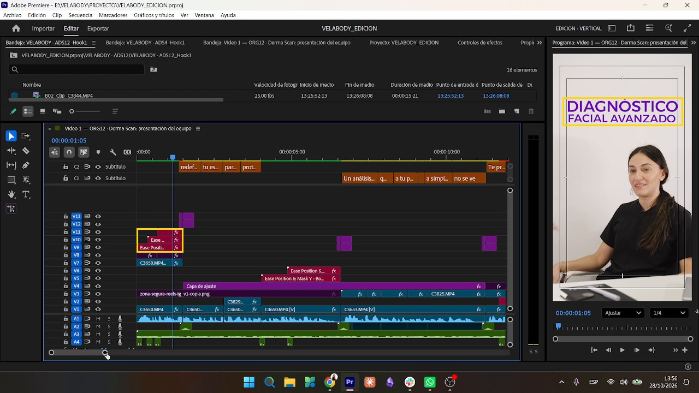
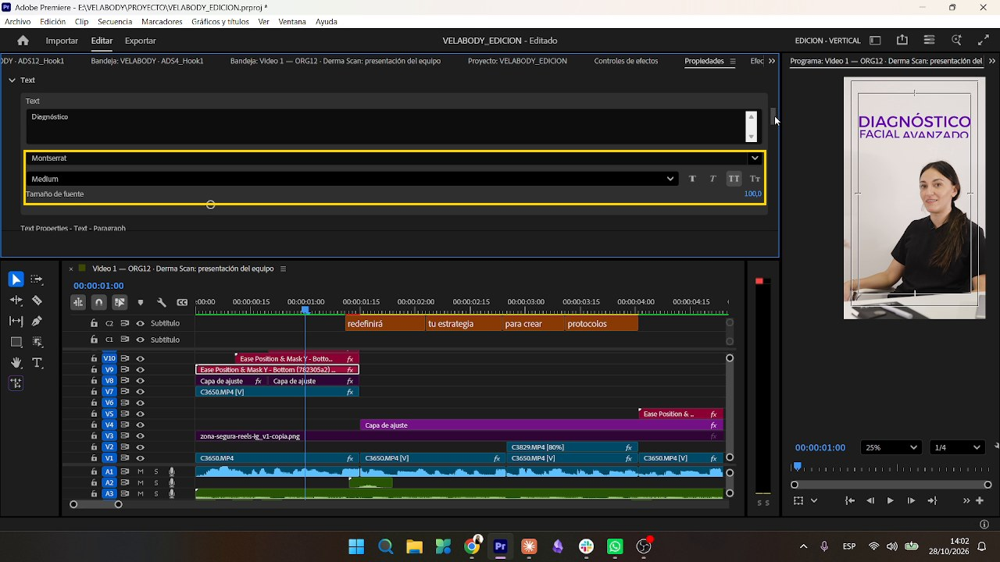
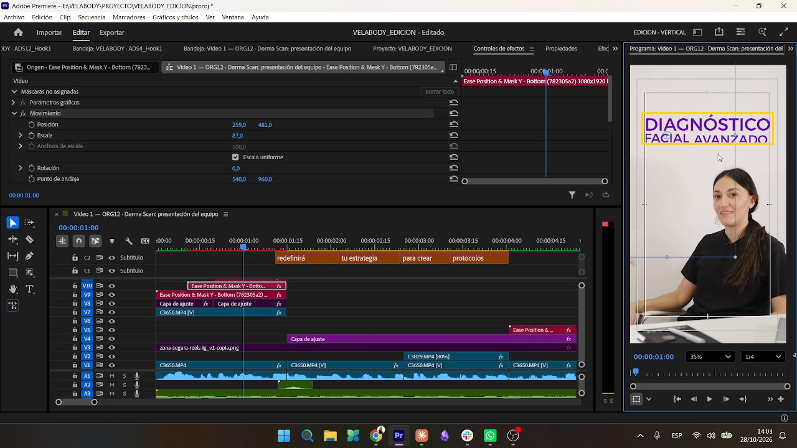
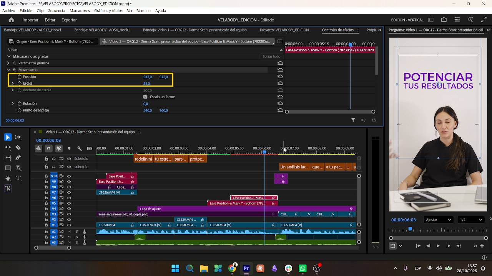
En el panel Propiedades la escala se deja como viene: ~100 en los títulos y 285 en la pastilla. Si se toca ahí, el MOGRT corta los bordes. Todo el ajuste de tamaño y posición se hace en Control de efectos › Movimiento, a ojo, hasta que entre bien en el encuadre.
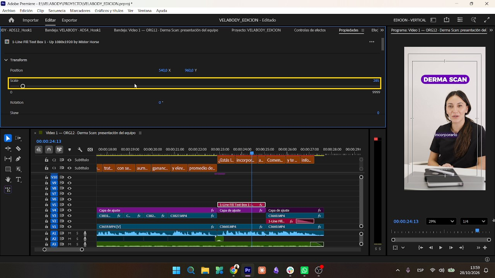
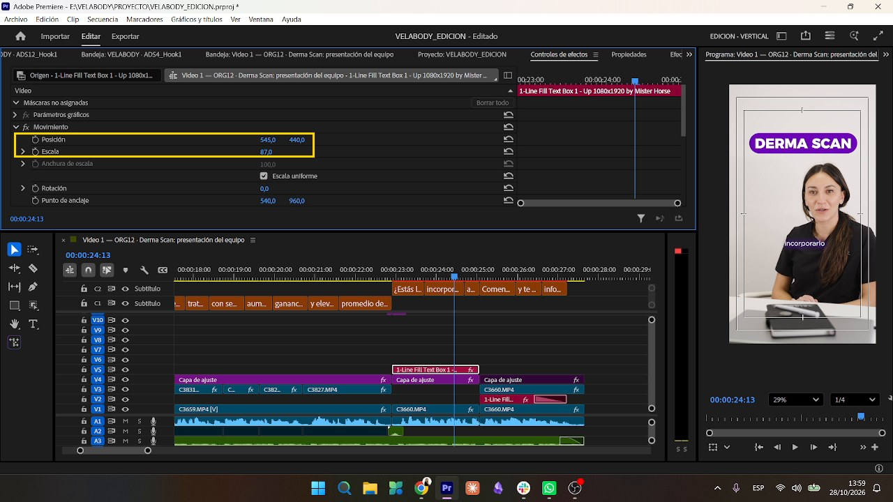
Se edita siempre con la guía zona-segura-reels-ig_v1-copia.png en una pista de arriba. Los gráficos quedan con la misma distancia a los dos lados, pensando en cómo se ve en el celular.
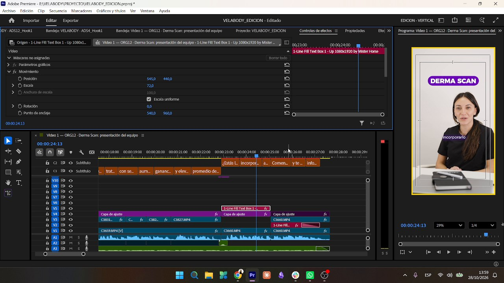
Es la pastilla violeta con texto blanco para los nombres de equipo (DERMA SCAN). En la línea de tiempo aparece como 1-Line Fill Text Box 1 - Up 1080x1920 by Mister Horse. La animación de movimiento es la misma que la del título. El nombre del producto va siempre en mayúsculas.
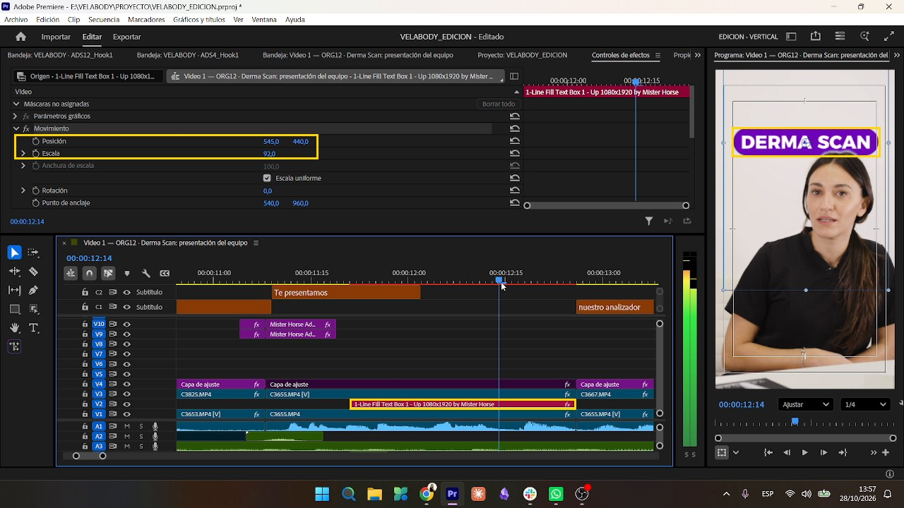
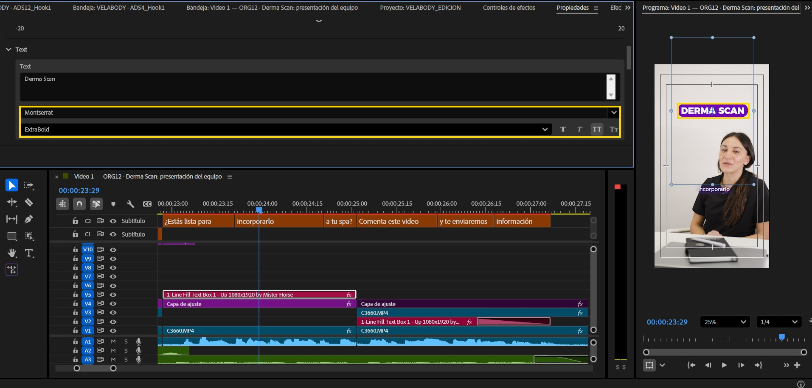
Para que la pastilla quede detrás de la cabeza, el gráfico va entre dos copias del mismo clip:
CORRECCION DE COLOR (Lumetri). En ese tramo se deshabilita, se copia el efecto Color de Lumetri y se pega en las dos copias del clip (V1 y V3). Así el color de la piel queda igual y el Lumetri no tiñe el gráfico.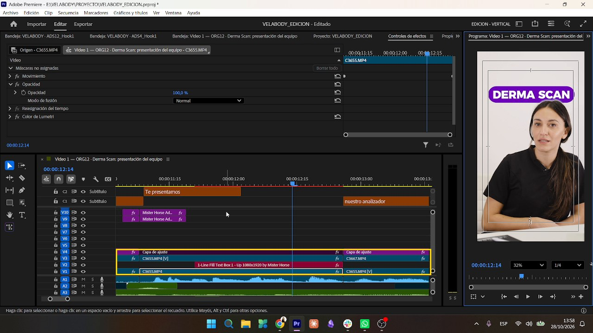
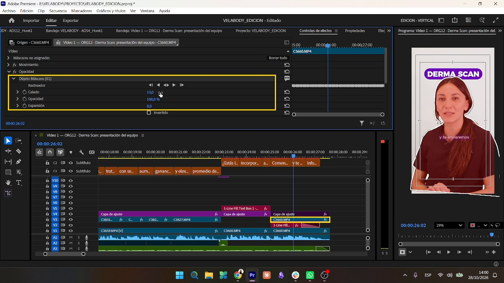
Si la persona mueve la cabeza y la máscara deja de cubrir bien, se usa el Rastreador del Objeto máscara: se posiciona la máscara sobre ella y se le da play para que haga el trackeo. Hay que hacerlo solo en tramos muy cortos del clip, porque consume muchos recursos de la compu.
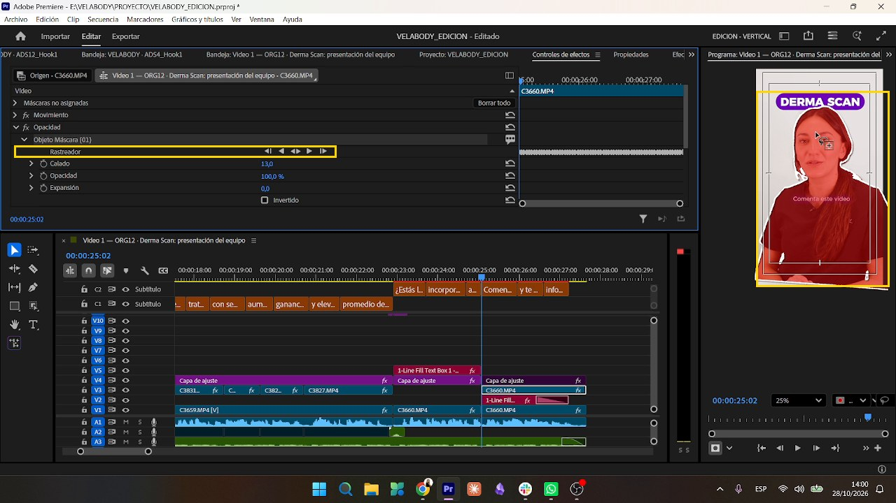
Cuando el mismo plano dura mucho, se vuelve a usar la pastilla pero más chica y arriba, y se varía un poco el tamaño para que no se vea siempre igual. Después se hace un pequeño zoom in al clip con dos keyframes de Posición y Escala sin curvas automáticas (interpolación lineal): se marcan los dos puntos y listo.
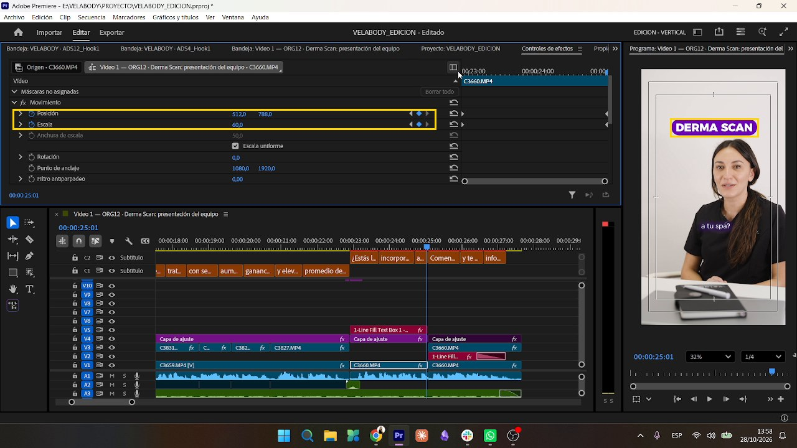
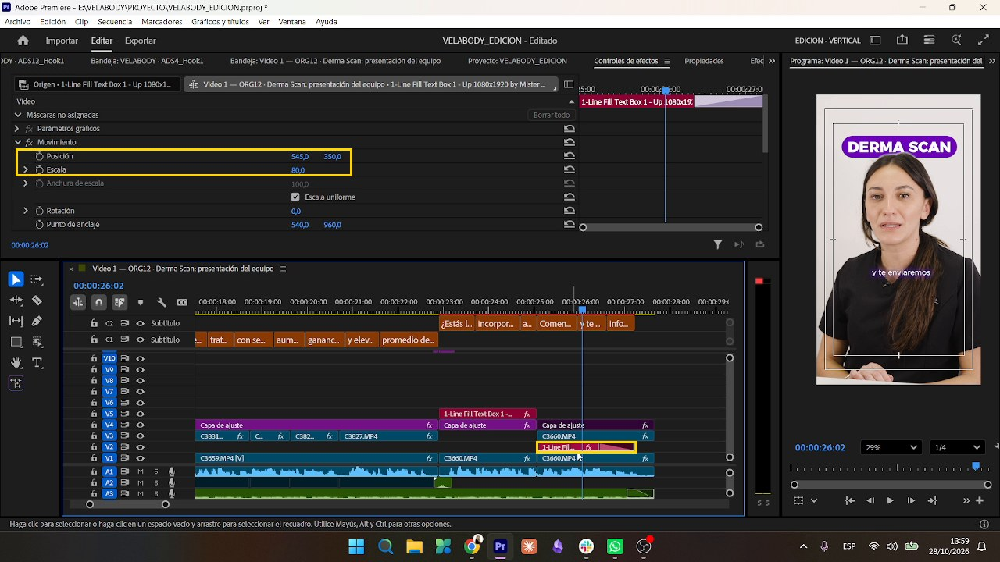
Esto ya lo vieron antes, así que va como recordatorio. Siempre en una sola línea, con 2 o 3 palabras y a la misma altura fija, sin tapar el equipo.
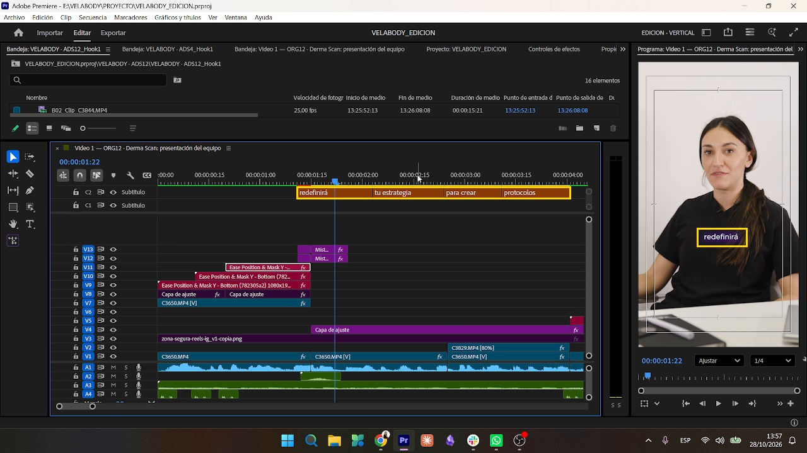
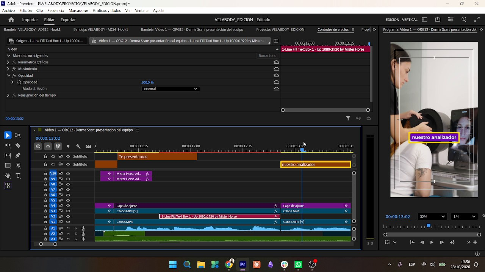
VELABODY SUBS C FONDO.